| 本科展（一） | 2026.05.20 — 06.03 第4天 |
| 本科展（二） | 2026.06.08 — 06.22 |
| 研究生展 | 2026.04.30 — 05.14（已结束） |
| 地点 | 中央美术学院美术馆 · 花家地新馆 |
| 门票 | 普通票 30元 / 学生票 20元 / 校友票 15元 |
| 预约 | 微信小程序「中央美术学院美术馆」· 提前7天 |
| 时间 | 09:30 — 17:30（17:00 停止入场）· 周一正常开放 |
皮纸裱于木板 · 岩彩矿物色、墨、彩铅 · 160×300cm · CAFA"焕彩"系列报道
以家乡江西万年的稻田为核心意象，画面下方是蓬勃向上的水稻，上方是翱翔的飞鸟，体现故土"无声的挽留"与年轻人"奔赴远方的渴望"之间的情感对抗。借鉴沧源崖画的古朴形式，融入锦灰堆（八破图）手法刻画中西方艺术史名作碎片。
AI互动装置：《年轻人，你去哪？》借助AI技术将现场观众形象即时转化为艺术形象并投影到画作中。
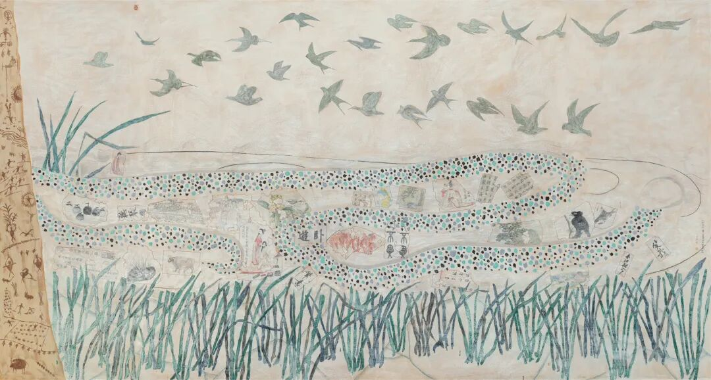
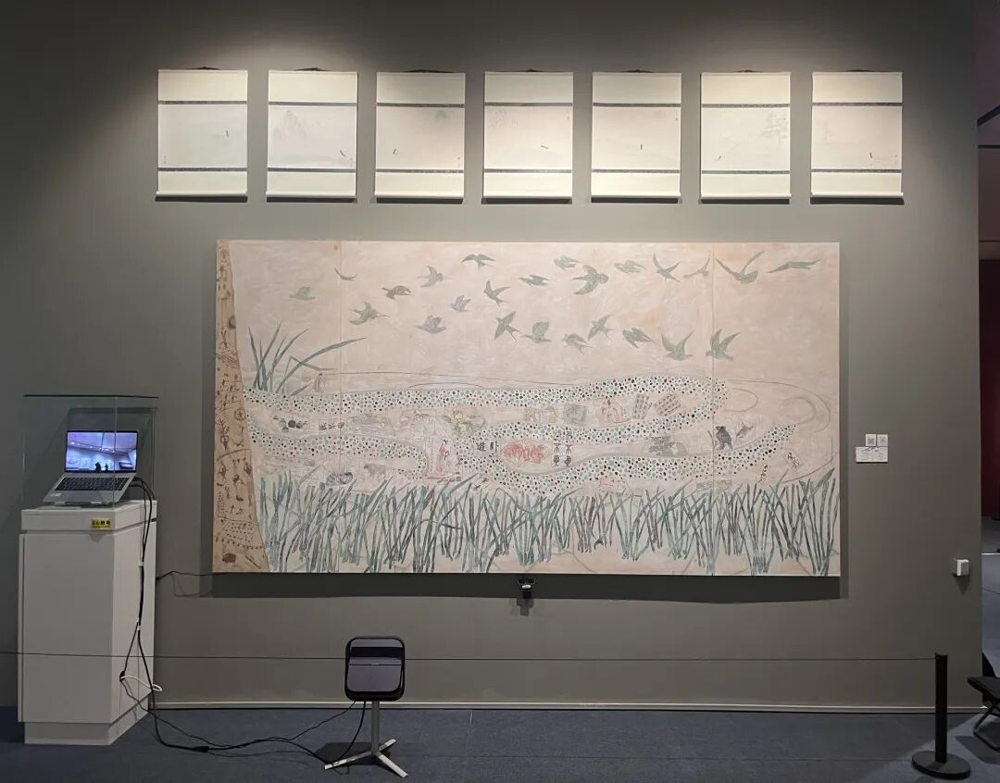
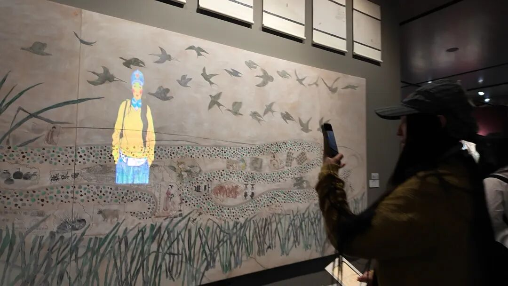
棉浆纸裱于木板 · 铁氰化钾、柠檬酸铁铵、彩墨、色粉 · 100×240cm × 2幅
以蓝晒（Cyanotype）技法在棉浆纸上结合药液与色粉，钢笔绘制图纸，以建筑蓝图形式呈现龙与凤凰两个中华传统文化意象。
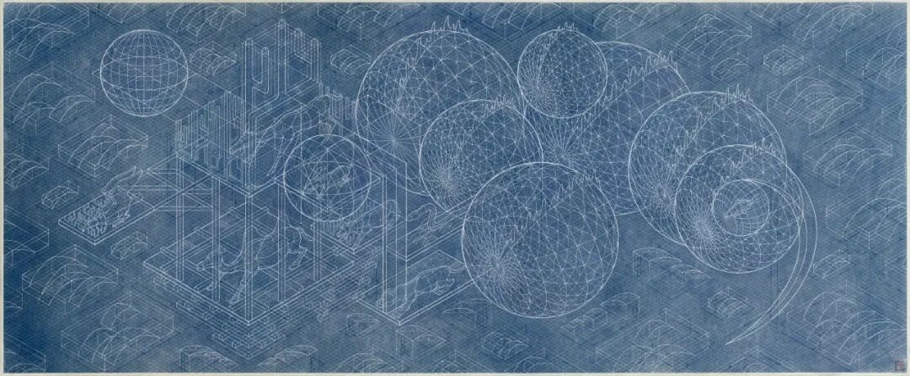
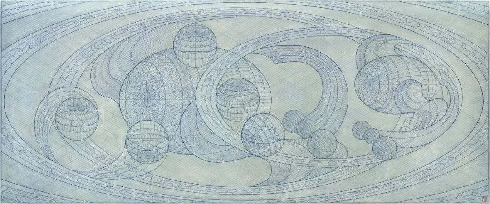
布面油画 · 刮刀厚涂
以刮刀厚涂技法对画室内的日常杂物进行几何重构，被观众列为"本科展四大夯作品"之一。
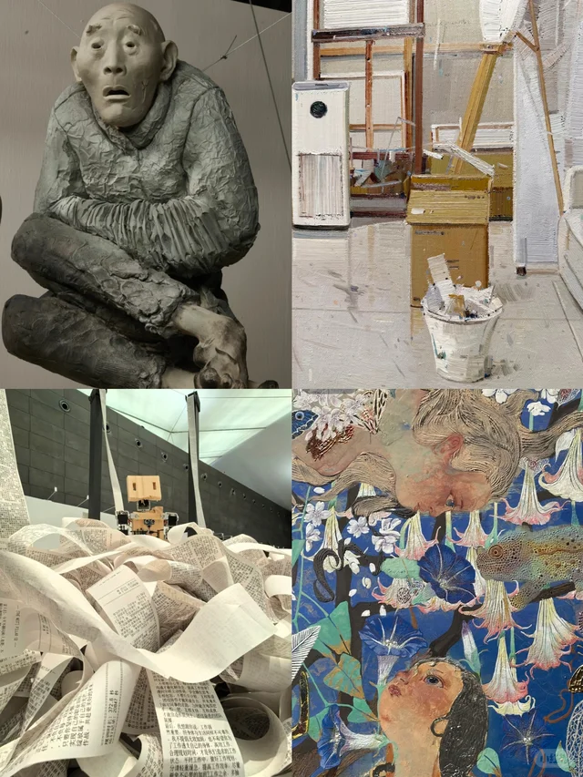
互动装置 · 城市设计学院一层展厅
融合观众留言展现童年记忆与陪伴感。配合旧物件唤起观者童年中"人与人之间真实的陪伴感"。
城市设计学院一层互动展区集中展示
击鼓舞狮：体感交互，观众通过肢体动作与虚拟舞狮互动。
数字化《五牛图》盖章：传统名画的数字互动体验。
跳舞的唐代陶俑：历史文物与动态交互结合。
李白售酒装置：与李白"售酒"交互，打印融合诗句的小票。
捞金鱼：怀旧游戏数字化。
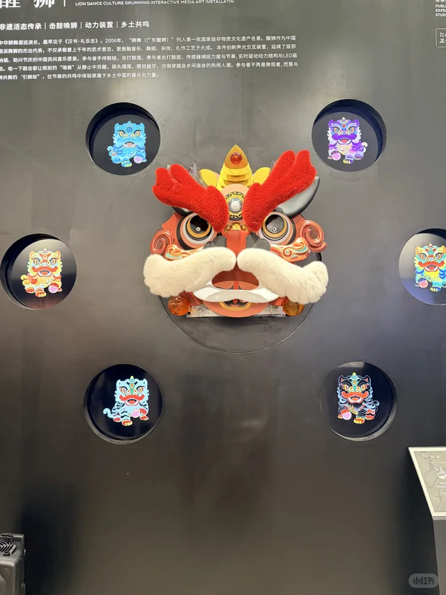
本科展互动装置作品，引发观众关于"承认"与"被看见"的心理讨论。小红书帖子获75+点赞。
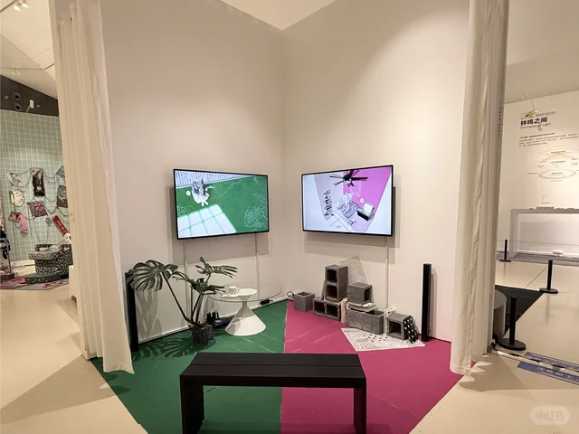
用800个小泥人拼成一座人生商场装置，每个小人代表不同身份与状态。"他用800个小人拼成一座人生商场"帖子获777+点赞。与研究生展《熙攘未央》有异曲同工之妙。
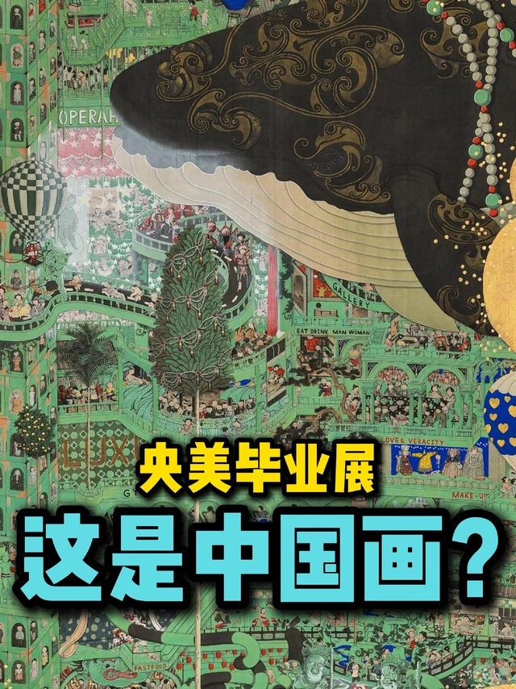
观众亲身参与的互动体验装置。覆盖现场表演、实时交互等多元形式。
以"临界"为主题探讨个体在边界状态下的存在体验，运用多种媒介材料营造沉浸式空间感知。
标题化用"黄粱一梦"典故，引发观众关于时间、记忆与现实的讨论。
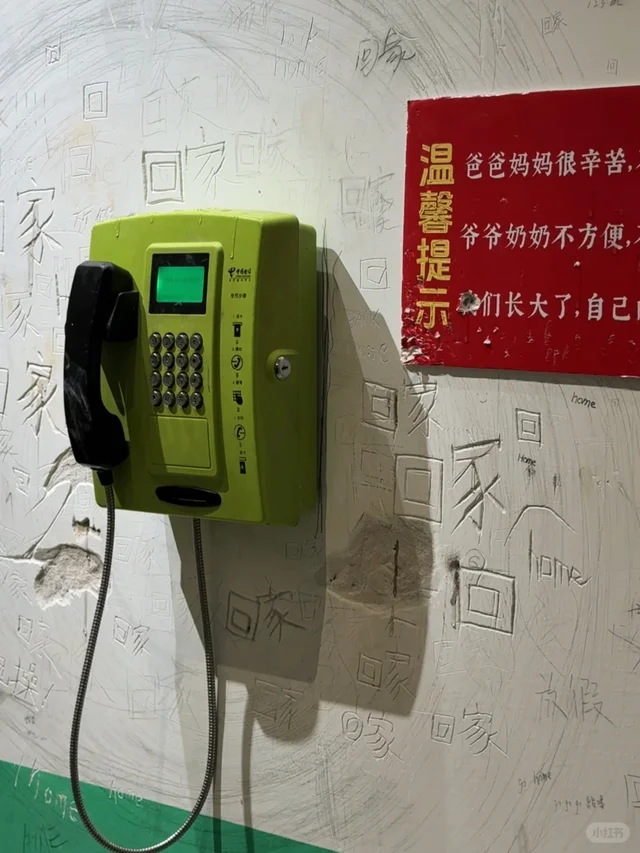
被观众评为"央美毕业展最催泪作品"，小红书"一别竟是永别"帖子获126+赞。以离别与永别为主题，触动观众情感共鸣。
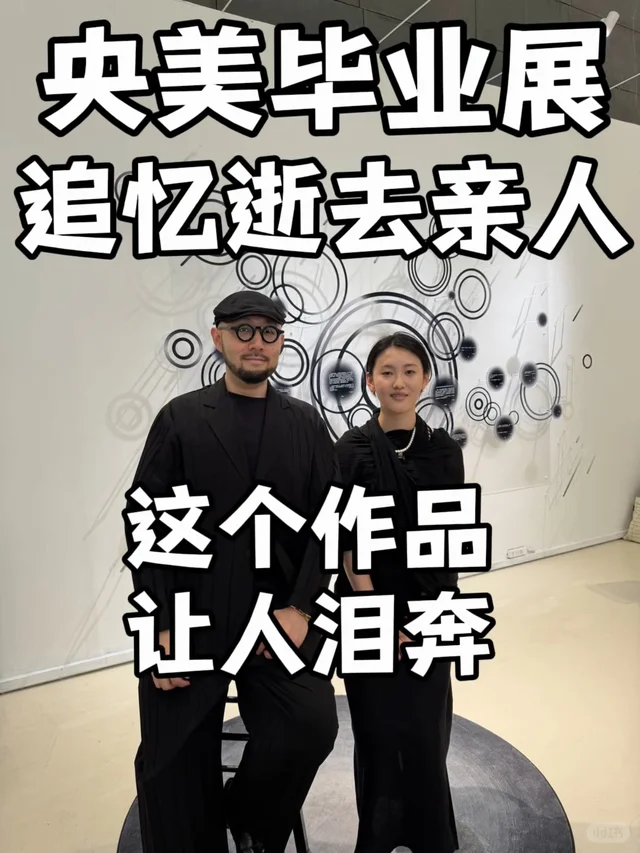
交互装置 · 新京报图说报道
以古画《重屏会棋图》的空间意境进行数字化创作。观者入座与画中人对弈，画面实时定格身影，形成画中画循环视觉，将人影层层叠入数字屏境，并留存过往体验者影像，实现古今交错的沉浸式体验。
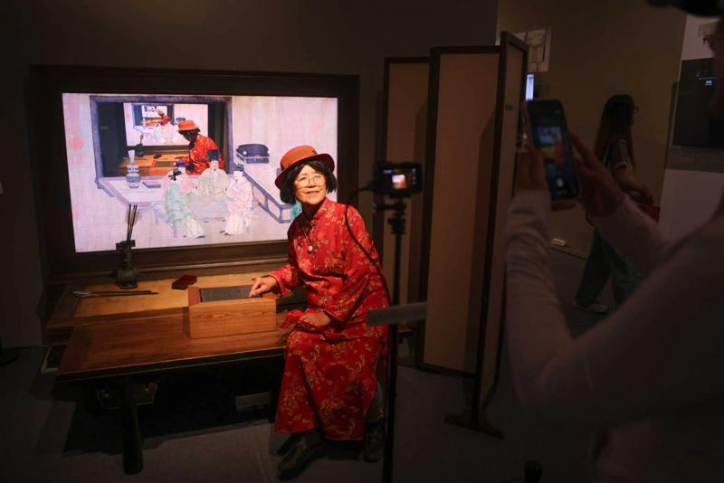
城市设计学院传统造物设计研究工作室毕业生作品 · 新京报图说报道
以光影为媒介创作的沉浸式空间装置，通过光线与结构的交互营造出"光之巢"的视觉意象，探索传统造物在当代科技语境下的新生。
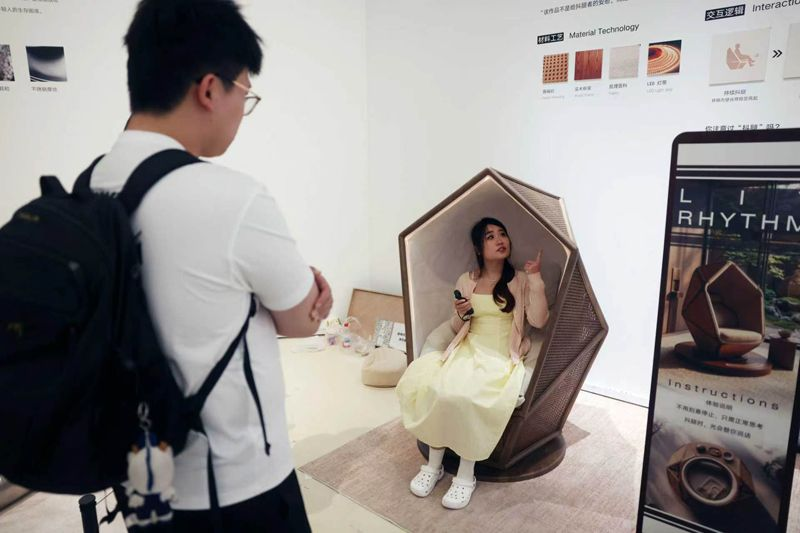
非遗滚灯艺术装置 · 新京报图说报道
以中国传统非遗滚灯技艺为核心，结合现代光影艺术打造的沉浸式互动装置。观众可近距离感受滚灯艺术的视觉魅力，在光影流转中体验传统技艺与当代审美的碰撞。
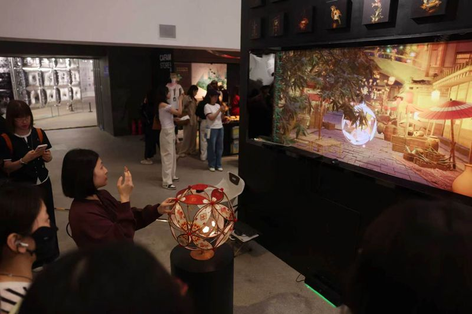
声音互动装置 · 新京报图说报道
充满温情的情感互动装置。观众贴着墙壁聆听着"家的声音"，通过声音装置触发对家庭、亲情的记忆与感怀。作品以含蓄而深沉的方式，让每位参与者与内心最柔软的部分对话。
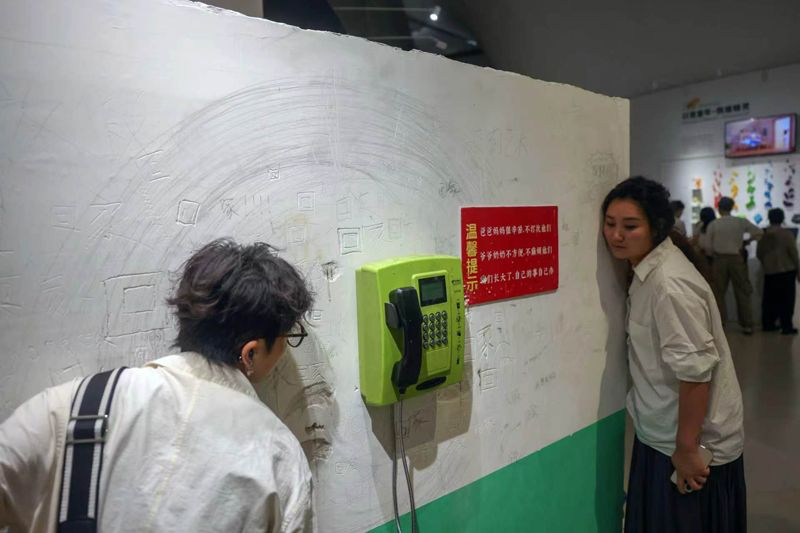
二十四节气踏步光影互动艺术装置 · 新京报图说报道
以中国二十四节气为创作主题的踏步式光影互动装置。观众通过踩踏触发不同节气的光影变化与音效，在身体参与中感受时序流转的自然韵律，将传统文化转化为可感知的身体体验。
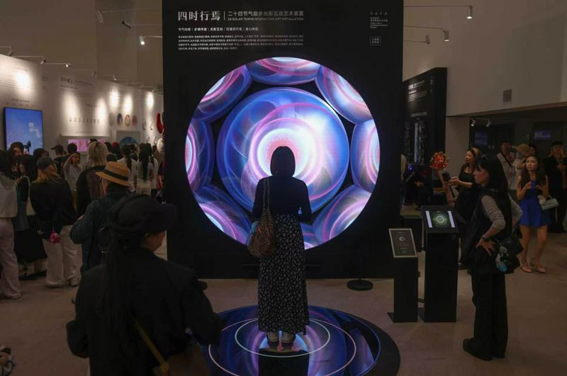
木板、镜子、布 · 综合材料装置 · 新京报图说报道
由木板、镜子和布制作的装置作品，通过日常材料的重组构建出一个名为"梨"的私密空间。镜面反射扩展了有限空间的视觉维度，布料的柔软与木板的硬朗形成材质对话，邀请观众进入一场关于空间、记忆与感知的沉思。
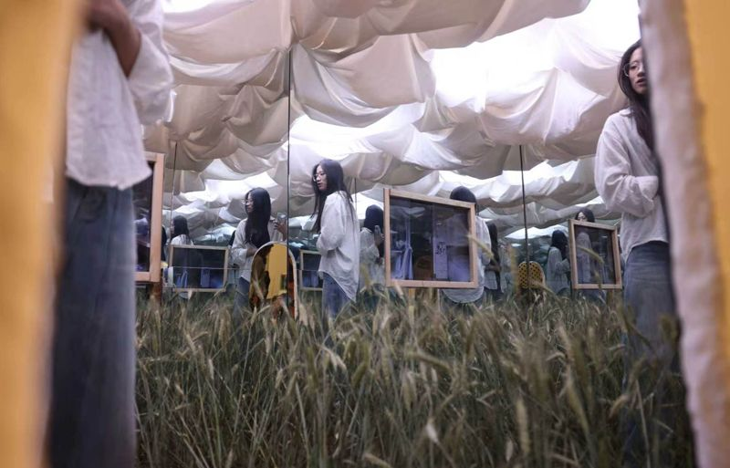
绘画装置 · 524×427×160cm
将古画、神话、动漫、AI图像交织重构，通过图像的借体与叙事断裂探讨当代视觉文化中的"串线"现象。作品以大规模的装置体量构建出一个图像迷宫，观众穿行其中感受不同时空、不同媒介图像的碰撞与重组。
机械设备、红砖、试卷等综合材料
一台可以批量化生产"艺术品"的半自动压制机。作者将试卷、废纸等日常材料压制成砖块形态，以机械化的生产方式反思当代艺术的同质化问题。作品以黑色幽默的方式叩问：当艺术可以被机器批量制造，"什么使我们的今天变得如此相同"？
综合材料 · 150×200cm
作品描绘一位母亲怀抱襁褓中的婴儿。作者将象征精致浪漫的小花小草（部分由母亲手绘）撕碎、燃烧再拼贴重构。宣纸层层叠加，晕染、渗透、褶皱如同岁月的积淀。人物轮廓以粗重线条勾勒，母亲背上的既是枷锁也是盔甲——柔软如初，却又坚不可摧。
VR虚拟现实互动装置
再现老式商场清仓甩卖场景，观众戴上VR设备后"梦游"空荡的老式商场，需要完成四个关卡，但通关后发现又回到第一个关卡——如同莫比乌斯环般循环往复。作品以游戏化的互动方式探讨时间、空间与消费记忆的关系。
传送带、蜡笔 · 互动共创装置
以传送带与蜡笔为媒介的互动装置，邀请观众在传送带上涂鸦共创。随着传送带缓缓移动，作品随时间不断流动变化，每位参与者的笔触都成为作品的一部分。作者以此探讨创作权的让渡与集体艺术的可能性。
布面油画 · 以香港城市风貌为主题
以香港城市景观为创作题材，用油画的笔触与色彩语言描绘城市的活力与层次。作者在帖文中称"我画中的香港"，从个人视角出发展现对这座城市的理解与情感连接。
| 名称 | 「焕彩共生」中央美术学院 2026 毕业季 |
| 本科展（一） | 2026.05.20 — 06.03（当前展期） |
| 时间 | 09:30 — 17:30（17:00 停止入场）· 周一正常开放 |
| 地点 | 中央美术学院美术馆 · 花家地新馆 |
| 门票 | 普通票 30元 / 学生票 20元 / 校友票 15元 |
| 预约 | 微信小程序「中央美术学院美术馆」· 提前7天开放 |
| 导航 | 搜索「中央美术学院北门」（望京花家地南街8号） |
| 耗时 | 建议 3-4 小时，走马观花约 2 小时能逛完 |
小红书多位博主推荐的路线，来自央美在读学生的个人总结：